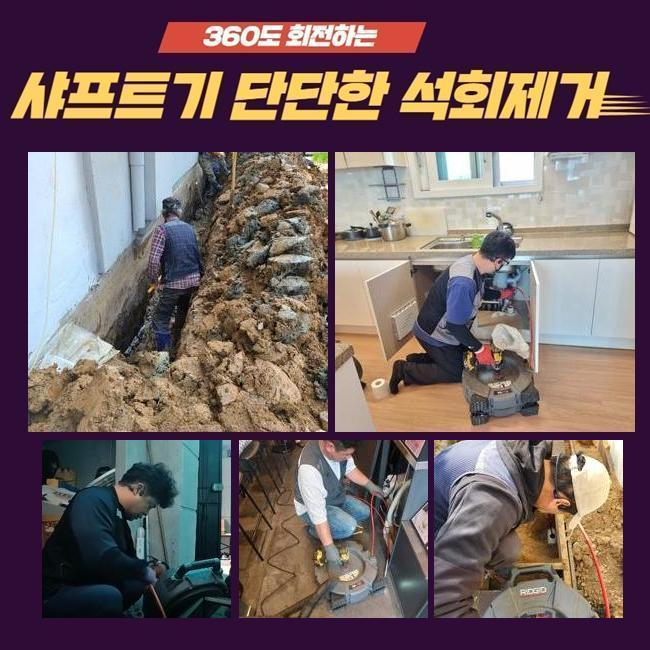
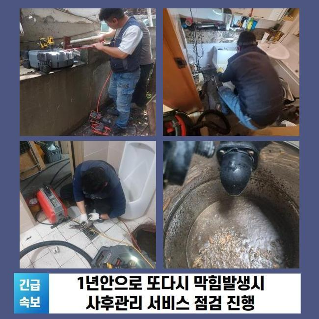
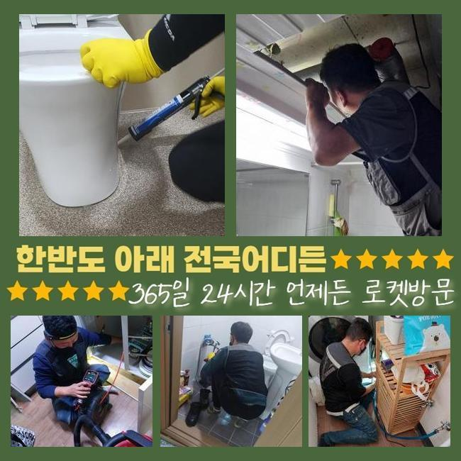
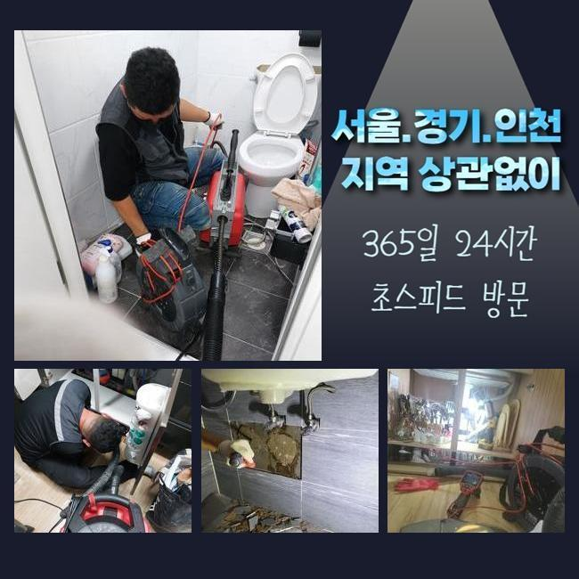
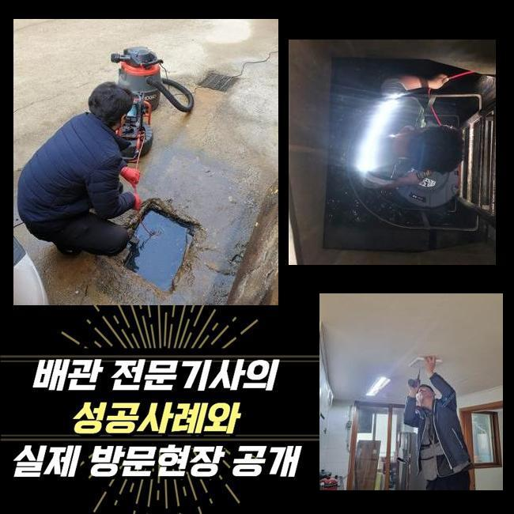
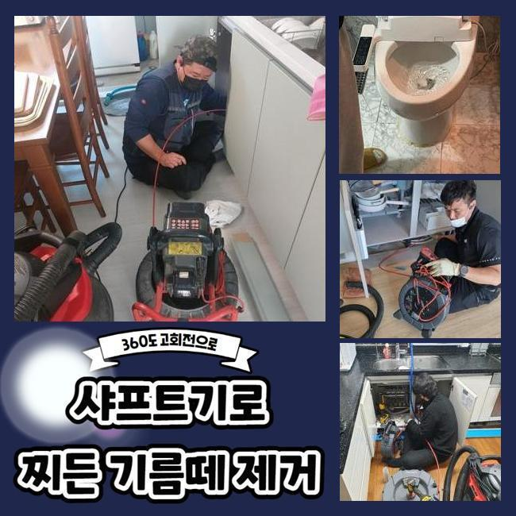
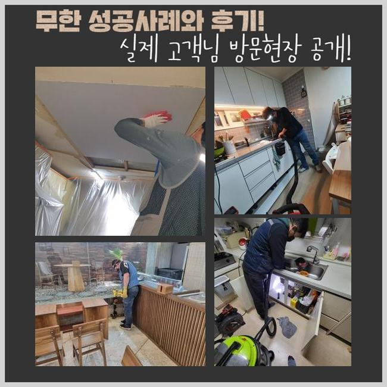

🏠 청주 싱크대하수구청소 싱크대물안빠짐 변기뚫는기계 하수관로준설
용인 싱크대막힘 전문 시공 후기

📋 작업 개요
- 위치: 용인
- 서비스 유형: 싱크대막힘, 변기막힘, 하수구막힘, 배관막힘, 역류해결, 뚫는업체, 배관청소, 고압세척, 설비공사, 악취차단
- 작업 일시: 2025. 1. 5. 21:42
- 업체명: 하수구수사대 (010-5615-2118)
🔍 문제 상황
청주 싱크대하수구청소 싱크대물안빠짐 변기뚫는기계 하수관로준설
편안해야할 가정내에서 간헐적으로 생겨나는 고장들이 있습니다
그것들 중 배관막힘을 말씀드릴수 있어요
하수관이 차단되면 주변환경이 더러워질수 있고 생활중의 불편을 증대시킵니다
배수불가 사태로 인해 세탁기 등을 사용못하고 역류마저 나타난다면 정말 난감해지겠죠
이번에는 투룸 세탁실 배관막힘으로 여러 기기를 동원해 처치한 절차를 설명드릴게요
의뢰자께서는 다용도실 안에 배치된 드럼세탁기기에서 물막힘이 일어났다며 저희들에게 의뢰를 진행하셨는데요
작업차 안에 샤프트분쇄기와 석션기기와 같은 것들을 갖추고 의뢰인의 댁으로 출발하였죠
도착해 보니 오취가 가득한 상황이었고 이물들이 산재된 모습까지 관측할수 있었답니다
세탁기능을 활용하여 물을 내려보려 했지만 도리어 토출되는 사태가 발생했다고 하시네요
단순히 세제성분만 역류된것이 아니고 여러종류의 침전물까지 배출되는 모습이었어요
일부의 시설에선 세탁실과 주방시설의 배수관이 이어진 상황도 볼수 있답니다
그러한 내용또한 점검해보기로 했죠
사태를 면밀하게 알아보려 의뢰인분에게 주방시설이나 타 배관이 막혔거나 역류증세가 생긴적은 없었는지에 대해 여쭸는데요

🔎 원인 분석
💡 전문가 진단: 정밀 진단 장비를 사용하여 슬러지의 고착 여부를 판명하고 타격/세척 작업을 실시했습니다.
그저께 물막힘 때문에 상점에서 구입한 액상뚫어뻥과 백식초를 투입하신적이 있다 말하셨어요
그것을 근거로 개수대쪽의 배수관에 정체의 이유가 있겠다고 추정되었죠
저희팀이 방문드린 장소의 막힘을 정리하려고 증상을 살피기로 했죠
내시경cctv를 이용해서 관로안을 검정하기로 결단하였어요
배수문이 막혀 내부에 내시경을 넣지 못할땐 방수성능이 있는 고속청소기로 배수관의 침전물을 제거하게 되죠
해당 공정으로 수리시간을 단축할수 있답니다
세정중 다양한 오물들과 찌꺼기들이 배출된것을 확인하였는데요
그러나 해당공정만으로는 본원적인 막힘의 까닭이 어떠한 것인지에 대해 간파해내지는 못했어요
초기에 실행한 흡입장비로 정리하지 못하는 것들이 많아서 곧바로 내시경카메라를 집어넣어서 물막힘이 생겨난 관로를 관찰하기로 했어요
상태를 자세하게 조사하니 해안에 많이 보이는 모래 성분이었답니다
세탁기에서 나온 것들일 가망성이 높았죠
의뢰자께 여행일정이 있으셨는지 여쭤보았더니 뻘이 많은 해변가에 놀러가셨다고 말씀하셨죠
우선하여 눈에띄는 찌꺼기들을 정리하고 더욱 전면적으로 세척작업을 실행합니다
그러면서 하단부위까지 처리가능한 장비들을 접목해보기로 했답니다

🔧 작업 과정
내시경cctv를 적용하는 것은 막힘이 일어난 동기를 분명히 파악하고 정체를 해소하기 위해서죠
흡입장비로 세척을 끝내고 가는 호스줄에 결속된 내시경카메라로 관로 안을 관찰하게 되었죠
심층부까지 살펴보았고 본질적인 막힘원인을 알아낼수 있었습니다
이러하듯 하수구 정체는 여러가지 변인들에 기인하여 발생될수가 있겠고 처리방책이 단조로운것도 아니라고 말씀드려요
그렇기때문에 전문적인 기기들을 토대로 공정을 이어나가야 무난하게 정리할수 있어요
만일에 대충대충 정체정황을 정리하려든다면 더더욱 고장이 심화되기 쉽다는 부분을 기억하시길 부탁드립니다
하수관 안쪽부분을 내시경카메라로 확인해보고 있어요
하수관의 총길이는 우리의 예상보다 크고 형태도 복잡해서 직시해서 검증하기에는 어려운 부분이 많습니다
그러한 정황에선 길고 가는 내시경기기가 큰 임무를 수행할수가 있는거죠
내시경기기를 이용해서 안쪽을 꼼꼼하게 조사하니 여러종류의 슬러지와 흙성분들이 혼합되어 있었죠
해당 찌꺼기들은 물과 섞이지 않아서 단단하게 굳기 쉽죠
미세한 잔재들은 배수가 되어서 오수탱크로 이동하겠지만 일거에 그것들을 배관에 투입한다면 이 지점처럼 체증이 가속화될수 있답니다
그것에 더하여 막힘이 계속된다면 배수관에 단단한 물질층이 생성되기도 하죠
이물의 크기와 양을 기준으로 사용되는 장비들이 달라요
예시를 들어 헝겊등의 넓적한 이물들이 누적되었다면 기다란 막대형태의 장비로 들어낸뒤 석션기기로 관로 안을 청소해야 됩니다
혹시라도 이러한 과정을 생략하고 곧바로 분쇄공정에 들어가면 하수관 내측이 한층더 안좋아질수 있답니다
이물들이 특정한 공간에 다량이 존재하고 있다면 자그마한 크기로 분쇄시키는 시공을 시행하곤 하죠
이 현장은 모래알들과 뒤섞여 있었기에 샤프트장비를 동원하여 소제한다음에 뚫어내기로 결정한것이죠
금번 장소에서는 관로안을 채웠던 노폐물들을 소제하고 내시경설비로 또다시 진단을 시행하였죠
그후 잔류하는건 분쇄기기로 깨끗이 소제하고 즉각적으로 통수관련 검사를 실시했는데요
이상없이 속시원히 소멸되는걸 목견하게 되었습니다
시공과정에서 배출된 폐기물들을 전체적으로 소거하고 분리폐기하는걸로 공사를 끝마쳤답니다


✅ 작업 완료
해당하는 막힘현상을 방지하기 위해선 정기적으로 하수구 확인했고 청소해야 됩니다
주방설비쪽의 하수관에선 음식물이 고착화되어서 역류까지 일으키는 경우가 허다하죠
그러한 사태를 마주한다면 머뭇거리지 마시고 즉시 전문업체를 찾으시는게 합리적인 선택입니다
가정안에서 처치할수있는 방책은 제한이 뒤따르고 막힘상황이 한층 나빠지는 케이스도 빈번하기 때문이죠
전문가의 클리닝과정은 간략히 일과를 정상화시키는걸 넘어서서 청결성을 지속시키는데도 중요하답니다
그것에 더하여 막힘문제가 지속해서 방치되버리면 주변 이웃들에게도 불편함을 초래할수 있다는걸 기억하셔야 해요




⚠️ 주방 싱크대 배관 막힘 예방 수칙
- ✅ 기름기가 묻은 식기나 프라이팬은 설거지 전 키친타올로 반드시 기름때를 닦아내세요.
- ✅ 주기적으로 싱크대 개수대에 뜨거운 물을 가득 받아 한 번에 내려 배관 내부 기름을 씻어내세요.
- ✅ 배수구 거름망을 미세한 필터로 사용하시고 음식물 찌꺼기가 틈으로 새어 들지 않게 관리하세요.
- ✅ 베이킹소다와 식초를 뜨거운 물과 함께 일주일에 한 번씩 부어주면 배관 살균과 막힘 예방에 좋습니다.
💡 핵심 정리
- 확실한 장비 작업(내시경 점검 및 샤프트 스케일링)으로 원인을 뿌리 뽑습니다.
- 작업 후 1년 이내에 동일한 부위 재발 시 100% 무상 A/S 서비스를 보장합니다.
- 서울 · 경기 · 인천 전 지역에 24시간 언제든 긴급 출동할 수 있도록 항시 대기 중입니다.
❓ 자주 묻는 질문 (FAQ)
🚨 용인 싱크대막힘 문제로 고민이신가요?
정확한 원인 진단과 확실한 시공으로 재발 없는 해결을 약속드립니다.
24시간 긴급 출동 | 서울 · 경기 · 인천 전지역 | 1년 내 재발 시 무상 A/S